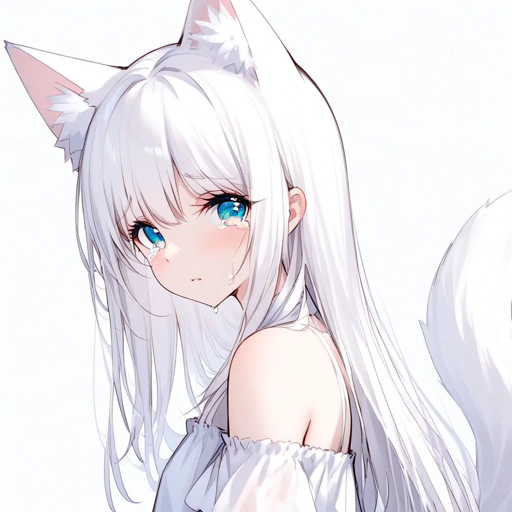
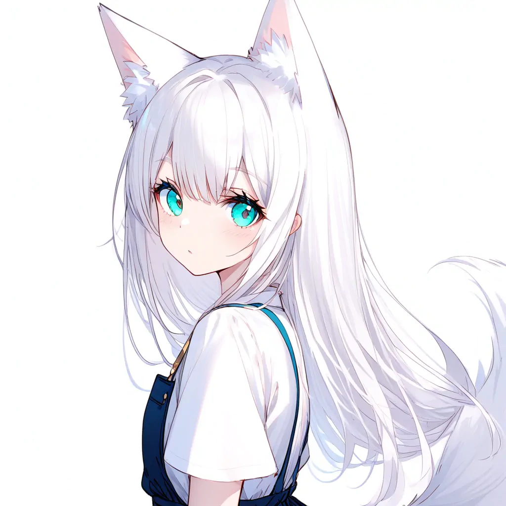

Chika
—— 这里是 Chika 的个人主页哦！あたしは白川だよ。北方からのキツネです。
—— Chika Shirakawa.
太穷了，实在请不起真正的画师，又怕遇到侵权问题。所以我不得不向 AI 作图寻求帮助。
在各大 VTuber 的启发下，我设计了「白川千歌」这一形象。
这是一篇关于她的文章。
个人信息
你好！我是 Chika！很高兴能在这里见到你！这里是我的一些基本信息哦。
姓： 白川 「しらかわ」
名： 千歌 「ちか」
性别： female
种族： fox
年龄： ***
喜好： 实在太多了，一时不知道应该写哪一个呢 ...
Prompt
这些都是关于我的正面提示词哦。为了保证出图的稳定性，我选择了最简单的服装 —— 白色露肩连衣裙。如果需要更多细节的话，请自行添加。
# 所用模型生成的图片年龄偏小，这里所写的年龄大于我的实际年龄
1gril, solo, 20 years old,
simple, simple_background, white_background, only_white,
# 衣着 & 外貌
white_dress, short_sleeves, shirt_only, simple_shirt, bare_shoulders,
white_ears, light_pink_ears, complete_ears, animal_ear_fluff, fox_tail, white_tail,
aqua eyes, fantastic eyes, jewelry eyes, very big eyes, long eyelashes,
white_hair, long hair,
# 表情、动作和视角
bangs, blush, shy, cute,
standing,
looking at viewer, face, from_side, close-up, feature, portrait, upper body,
# 质量要求
best quality, masterpiece, very aesthetic,
# 这些提示词是可选的
# Crying
crying, tears, rubbing eyes, one eye closed, one arm up,
# School uniform
school uniform, white shirt, black pleated skirt, serafuku, sailor collar, red neckerchief, black_thighhighs, long sleeves,
画廊
这些是还没有被 tatsuno 使用的作品。直接扔掉太可惜，我就先放在这里了。还是很好看的！！！这些图片仅供欣赏，不可以随意使用哦！
 